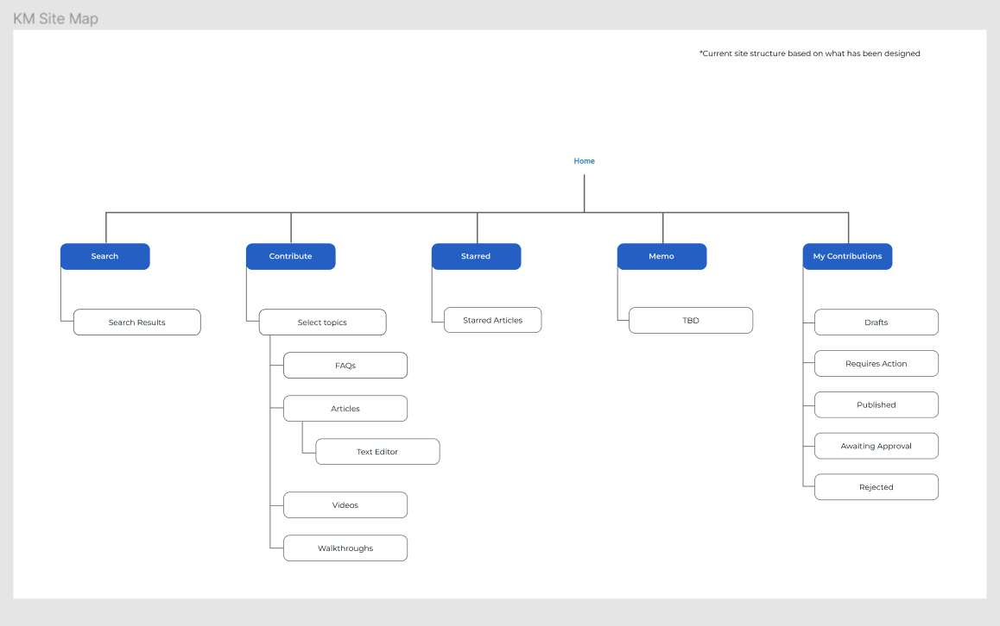
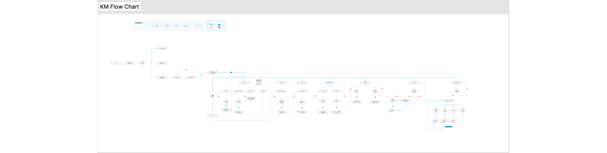
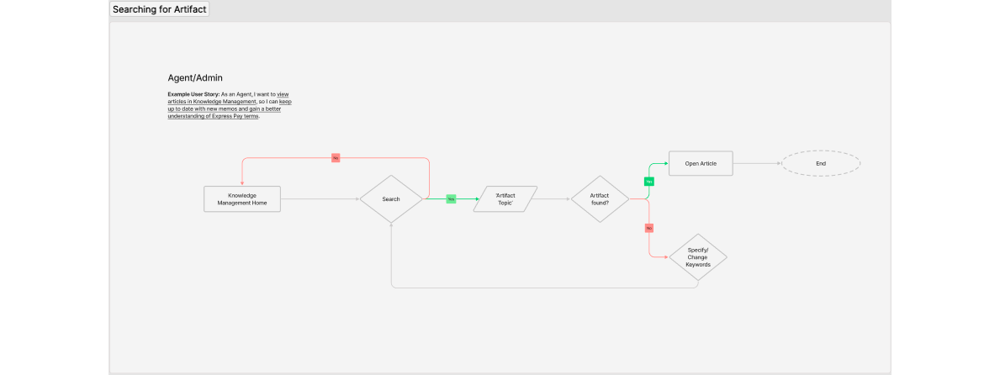
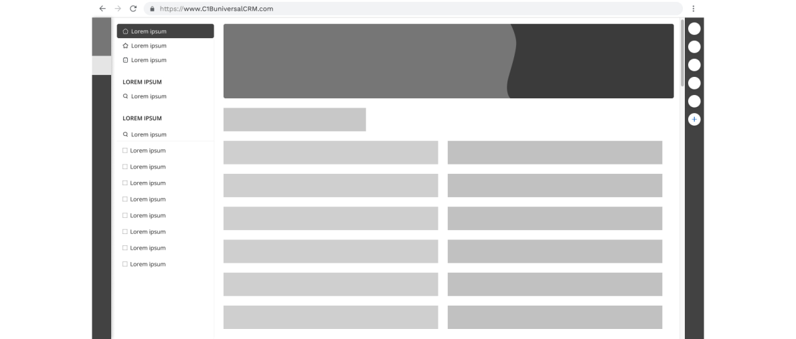
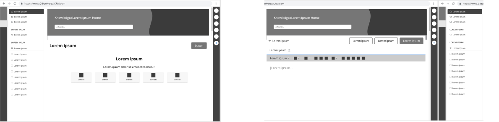
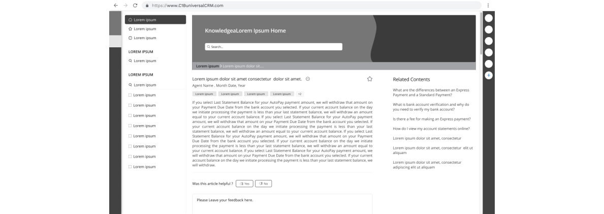
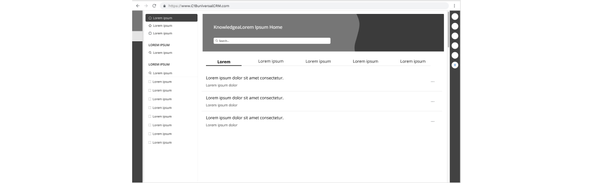

My Contribution
Role
I was the Lead Designer in this project. I came up with the design system and acted as a full stack designer from start to finish. Transitioning from legacy methodologies to a more modern approach.
Project Type
Web Application
Project Duration
August 2022 to June 2023
Design Tool
Figma, Adobe Photoshop, Indesign
Credit One Bank
Credit One Bank, N.A. is an American bank and financial services company specializing in credit cards, particularly for borrowers with low credit scores. It is a wholly-owned subsidiary of Credit One Financial, incorporated in Nevada.
Overview
Knowledge Home started as part of Universal CRM. While designing other applications and from conversations with our agents during that time I realized that the current way of accessing information left a lot to be desired. At that point of time you had to log in to a system and type out what word document you were looking for and read through the whole thing to find a small snippet of information. The layout of the information was not organized. As our system and company was growing I realized this would be a massive bottleneck for us.
With this in mind, I led the call to redesign the existing knowledge base and make it more accessible, easy to navigate and clear/concise.
Research:
Even though I had a general idea of what the initial pain points were for the agents, I felt the need to get more in depth into this problem.
- Job shadowing: Observed the call center agents as they performed their work.
- Workshops: Conducted workshops with call center agents to gather their input and feedback on the types of information and resources that would be most helpful for them to have access to.
- Usability testing: Tested the usability of the web-app knowledge home with call center agents.
- Customer feedback: Gathered feedback from customers who have interacted with call center agents This helped identify areas where call center agents may need additional training or support.
- Data analysis: Collected and analyzed call center data, such as call logs and customer feedback, to identify trends and patterns in the types of questions and issues that rose most frequently, and the types of information that call center agents needed to have readily available to assist customers more effectively.
Designing Process:
A basic stripped down architecture of the app


Key Features Added:
- Search Filtering and Sorting Options
- Each artifact has specific tags which can be used in conjunction with the search/sort feature thus getting more specific results back.


- Contribution Page (CS Call Agents, Writer, Admin)

- Feedback System

- Content History Page

Final Result
This is an ongoing project that is in production.
If you want to learn more about the project, let's set up a time and talk.
Thank You!
Thank you for reviewing my work. If you have any questions or want to just connect - feel free to reach out to me via email.